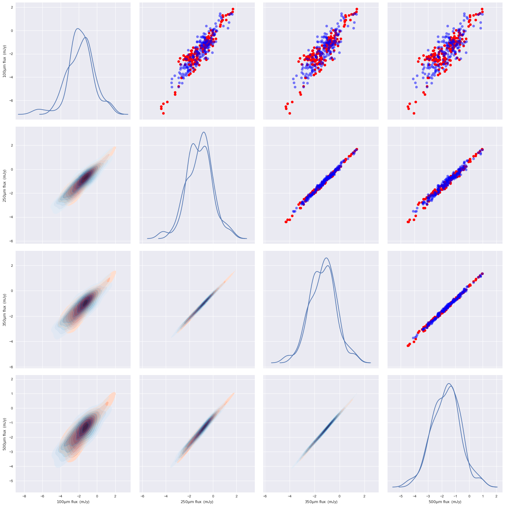
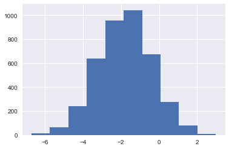
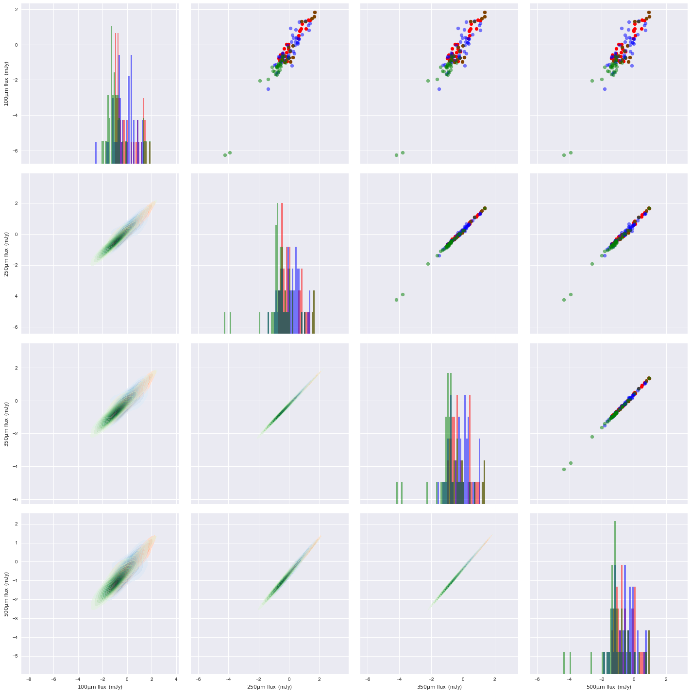

Empirical modelling of data¶
Here I will test modelling the multiband data as part of an empirical prior model. To illustrate and validate this I will carry out the following steps: 1. Model simulation distribution 2. Model simulation distribution having made cut 3. Model simulation distribution with model for cuts 3. Model simulation distribution from map
[1]:
import numpy as np
import pylab as plt
import seaborn as sns
%matplotlib inline
[2]:
from astropy.table import Table
[3]:
mock=Table.read('../../../test_files/lacey_07012015_MillGas.ALLVOLS_cat_PSW_COSMOS_test.fits')
[4]:
mock[0:10]
[4]:
<Table length=10>
| DHALOID | GALAXYID | S100 | S160 | S250 | S350 | S500 | APPUSO_TOT_EXT | APPGSO_TOT_EXT | APPRSO_TOT_EXT | APPISO_TOT_EXT | APPZSO_TOT_EXT | DEC | IS_CENTRAL | MHHALO | MSTARDOT | MSTARS_TOT | RA | Z_COS | Z_OBS |
|---|---|---|---|---|---|---|---|---|---|---|---|---|---|---|---|---|---|---|---|
| str22 | str22 | float32 | float32 | float32 | float32 | float32 | float32 | float32 | float32 | float32 | float32 | float64 | float32 | float32 | float32 | float32 | float64 | float32 | float32 |
| 7221000005 | 250660000005 | 0.184557 | 0.847295 | 1.00324 | 0.666443 | 0.30983 | 21.0851 | 19.9199 | 19.3745 | 19.1446 | 18.9669 | 2.52281435887 | 0.0 | 1.12367e+11 | 8.41508e+07 | 1.02091e+09 | 149.968831368 | 0.102633 | 0.100918 |
| 7354000005 | 252230000005 | 0.879098 | 2.2013 | 1.80466 | 0.997061 | 0.40618 | 20.3638 | 19.3247 | 18.8853 | 18.698 | 18.5506 | 1.09296587368 | 0.0 | 1.81679e+11 | 1.88512e+08 | 1.15188e+09 | 149.996199092 | 0.092121 | 0.0912445 |
| 4026000013 | 210160000013 | 0.0112136 | 0.0411177 | 0.0405248 | 0.0241011 | 0.0102681 | 25.039 | 23.1625 | 21.7082 | 21.1741 | 20.85 | 2.10696062174 | 0.0 | 2.84672e+11 | 2.00169e+06 | 6.09953e+09 | 149.137297107 | 0.376282 | 0.376532 |
| 4726000013 | 219730000013 | 0.0652038 | 0.208996 | 0.191553 | 0.110243 | 0.0459506 | 23.3759 | 22.8123 | 21.79 | 21.5169 | 21.3217 | 2.56423522875 | 0.0 | 2.80937e+11 | 3.34448e+08 | 1.60865e+09 | 150.92582623 | 0.376829 | 0.377374 |
| 5536000013 | 230270000013 | 0.103659 | 0.455567 | 0.496569 | 0.309403 | 0.13604 | 22.8201 | 22.3489 | 21.3669 | 21.1046 | 20.9246 | 2.16826441305 | 0.0 | 1.81664e+11 | 5.8204e+08 | 2.28481e+09 | 149.524681469 | 0.377186 | 0.377635 |
| 5762000013 | 233190000013 | 0.136709 | 0.615261 | 0.677913 | 0.424214 | 0.187012 | 22.8012 | 22.2651 | 21.2245 | 20.9151 | 20.6908 | 1.88389672817 | 0.0 | 1.76046e+11 | 6.97228e+08 | 3.16073e+09 | 149.729887985 | 0.383715 | 0.3851 |
| 9150000013 | 272530000013 | 0.0201797 | 0.105251 | 0.130986 | 0.0878964 | 0.0408579 | 23.9817 | 23.5002 | 22.5123 | 22.2561 | 22.0729 | 2.41002832928 | 0.0 | 8.80211e+10 | 1.92794e+08 | 7.69563e+08 | 149.891553543 | 0.381552 | 0.382695 |
| 4424000012 | 215640000012 | 0.0270184 | 0.146568 | 0.192646 | 0.136105 | 0.0665875 | 23.3157 | 22.8147 | 22.039 | 21.8566 | 21.7233 | 1.40785718228 | 0.0 | 1.55454e+11 | 2.51134e+08 | 6.29514e+08 | 150.436258903 | 0.327132 | 0.325931 |
| 24026571 | 1840000011 | 39.481 | 67.4472 | 45.2025 | 23.0549 | 8.96614 | 23.275 | 21.9669 | 20.7596 | 20.2263 | 19.9311 | 2.15883520338 | 0.0 | 2.30369e+11 | 5.59299e+09 | 2.42265e+10 | 149.563597856 | 0.292259 | 0.293412 |
| 24026509 | 1850000011 | 0.4366 | 1.29728 | 1.12227 | 0.626028 | 0.255027 | 21.9426 | 21.1694 | 20.2875 | 19.9949 | 19.8004 | 2.02323895883 | 0.0 | 2.43463e+11 | 7.10691e+08 | 3.93756e+09 | 149.438586031 | 0.292881 | 0.292721 |
[8]:
import pystan
Gaussian Mixture model¶
[130]:
model="""
data {
int N;
int D;
vector[D] y[N];
int n_groups;
}
parameters {
ordered[n_groups] mu_S250;
vector[D-1] mu_other[n_groups];
cholesky_factor_corr[D] L[n_groups];
simplex[n_groups] Theta;
vector<lower=0>[D] L_sigma[n_groups];
}
transformed parameters {
vector[D] mu_all[n_groups];
for (n in 1:n_groups){
mu_all[n,1]=mu_S250[n];
for (d in 1:D-1){
mu_all[n,d+1]=mu_other[n,d];
}
}
}
model {
vector[n_groups] contributions;
matrix[D, D] L_Sigma[n_groups];
// priors
mu_S250~normal(0, 10);
Theta ~ dirichlet(rep_vector(2.0, n_groups));
for(n in 1:n_groups) {
L[n] ~ lkj_corr_cholesky(4);
L_sigma[n] ~ cauchy(0, 2.5);
L_Sigma[n] = diag_pre_multiply(L_sigma[n], L[n]);
for (i in 1:D-1){
mu_other[n,i] ~ normal(0, 10);
}
}
// likelihood
for(i in 1:N) {
for(k in 1:n_groups) {
contributions[k] = log(Theta[k]) + multi_normal_cholesky_lpdf(y[i] | mu_all[k], L_Sigma[k]);
}
target += log_sum_exp(contributions);
}
}
generated quantities {
vector[D] yrep[2];
matrix[D, D] L_Sigma[n_groups];
L_Sigma[1] = diag_pre_multiply(L_sigma[1], L[1]);
for(i in 1:2){
yrep[i]=multi_normal_cholesky_rng(mu_all[1], L_Sigma[1]);
}
}
"""
[131]:
sm = pystan.StanModel(model_code=model)
INFO:pystan:COMPILING THE C++ CODE FOR MODEL anon_model_e64f93d11b43efeb41e87e72a51be1f9 NOW.
Select sources that have finite flux values in 100, 250, 350 and 500 \(\mathrm{\mu m}\)¶
[172]:
ind_true=np.isfinite(np.log10(mock['S100'][0:200])) & np.isfinite(np.log10(mock['S250'][0:200])) & np.isfinite(np.log10(mock['S350'][0:200])) & np.isfinite(np.log10(mock['S500'][0:200]))
/Users/pdh21/anaconda3/envs/new/lib/python3.6/site-packages/ipykernel/__main__.py:1: RuntimeWarning: divide by zero encountered in log10
if __name__ == '__main__':
[173]:
y_true=np.vstack((np.log10(mock['S100'][0:200])[ind_true],np.log10(mock['S250'][0:200])[ind_true],np.log10(mock['S350'][0:200])[ind_true],np.log10(mock['S500'][0:200])[ind_true]))
/Users/pdh21/anaconda3/envs/new/lib/python3.6/site-packages/ipykernel/__main__.py:1: RuntimeWarning: divide by zero encountered in log10
if __name__ == '__main__':
[168]:
data={'N':ind_true.sum(),
'D':4,
'y':y_true.T,
'n_groups':1}
[152]:
fit=sm.sampling(data=data, iter=2000)
[153]:
fit
[153]:
Inference for Stan model: anon_model_e64f93d11b43efeb41e87e72a51be1f9.
4 chains, each with iter=2000; warmup=1000; thin=1;
post-warmup draws per chain=1000, total post-warmup draws=4000.
mean se_mean sd 2.5% 25% 50% 75% 97.5% n_eff Rhat
mu_S250[0] -1.79 0.01 0.11 -2.03 -1.86 -1.79 -1.72 -1.59 97 1.03
mu_other[0,0] -1.16 8.8e-3 0.08 -1.32 -1.21 -1.15 -1.1 -1.0 85 1.03
mu_other[0,1] -1.35 8.4e-3 0.08 -1.52 -1.4 -1.35 -1.3 -1.21 86 1.03
mu_other[0,2] -1.7 8.1e-3 0.08 -1.86 -1.75 -1.7 -1.65 -1.56 88 1.03
L[0,0,0] 1.0 0.0 0.0 1.0 1.0 1.0 1.0 1.0 4000 nan
L[0,1,0] 0.92 1.8e-3 0.01 0.9 0.91 0.92 0.93 0.94 46 1.09
L[0,2,0] 0.88 2.6e-3 0.02 0.84 0.86 0.87 0.89 0.91 46 1.09
L[0,3,0] 0.84 3.3e-3 0.02 0.8 0.82 0.84 0.85 0.88 46 1.09
L[0,0,1] 0.0 0.0 0.0 0.0 0.0 0.0 0.0 0.0 4000 nan
L[0,1,1] 0.39 4.2e-3 0.03 0.34 0.38 0.4 0.41 0.44 44 1.09
L[0,2,1] 0.48 4.9e-3 0.03 0.41 0.46 0.48 0.5 0.54 44 1.09
L[0,3,1] 0.54 5.2e-3 0.03 0.47 0.52 0.55 0.57 0.6 45 1.09
L[0,0,2] 0.0 0.0 0.0 0.0 0.0 0.0 0.0 0.0 4000 nan
L[0,1,2] 0.0 0.0 0.0 0.0 0.0 0.0 0.0 0.0 4000 nan
L[0,2,2] 0.01 8.8e-5 8.4e-4 0.01 0.01 0.01 0.01 0.01 91 nan
L[0,3,2] 0.03 1.9e-4 1.8e-3 0.02 0.02 0.03 0.03 0.03 92 1.06
L[0,0,3] 0.0 0.0 0.0 0.0 0.0 0.0 0.0 0.0 4000 nan
L[0,1,3] 0.0 0.0 0.0 0.0 0.0 0.0 0.0 0.0 4000 nan
L[0,2,3] 0.0 0.0 0.0 0.0 0.0 0.0 0.0 0.0 4000 nan
L[0,3,3] 2.4e-3 1.7e-5 1.7e-4 2.1e-3 2.3e-3 2.4e-3 2.5e-3 2.7e-3 102 nan
Theta[0] 1.0 0.0 0.0 1.0 1.0 1.0 1.0 1.0 4000 nan
L_sigma[0,0] 1.43 8.7e-3 0.07 1.3 1.38 1.42 1.47 1.59 67 1.06
L_sigma[0,1] 1.06 7.1e-3 0.05 0.97 1.03 1.06 1.09 1.17 52 1.11
L_sigma[0,2] 1.02 6.6e-3 0.05 0.93 0.99 1.02 1.05 1.13 54 1.11
L_sigma[0,3] 1.0 6.3e-3 0.05 0.91 0.97 1.0 1.03 1.1 57 1.11
mu_all[0,0] -1.79 0.01 0.11 -2.03 -1.86 -1.79 -1.72 -1.59 97 1.03
mu_all[0,1] -1.16 8.8e-3 0.08 -1.32 -1.21 -1.15 -1.1 -1.0 85 1.03
mu_all[0,2] -1.35 8.4e-3 0.08 -1.52 -1.4 -1.35 -1.3 -1.21 86 1.03
mu_all[0,3] -1.7 8.1e-3 0.08 -1.86 -1.75 -1.7 -1.65 -1.56 88 1.03
yrep[0,0] -1.81 0.02 1.42 -4.59 -2.77 -1.79 -0.86 0.98 4000 1.0
yrep[1,0] -1.82 0.02 1.43 -4.6 -2.75 -1.85 -0.86 1.07 4000 1.0
yrep[0,1] -1.15 0.02 1.06 -3.22 -1.89 -1.14 -0.43 0.94 4000 1.0
yrep[1,1] -1.18 0.02 1.06 -3.24 -1.87 -1.18 -0.49 0.95 3909 1.0
yrep[0,2] -1.35 0.02 1.03 -3.31 -2.06 -1.34 -0.66 0.66 4000 1.0
yrep[1,2] -1.37 0.02 1.02 -3.37 -2.04 -1.38 -0.71 0.67 3870 1.0
yrep[0,3] -1.7 0.02 1.0 -3.63 -2.39 -1.69 -1.02 0.3 4000 1.0
yrep[1,3] -1.72 0.02 0.99 -3.66 -2.37 -1.73 -1.07 0.28 3841 1.0
L_Sigma[0,0,0] 1.43 8.7e-3 0.07 1.3 1.38 1.42 1.47 1.59 67 1.06
L_Sigma[0,1,0] 0.98 8.0e-3 0.06 0.88 0.94 0.97 1.01 1.11 49 1.11
L_Sigma[0,2,0] 0.9 7.9e-3 0.06 0.8 0.86 0.89 0.93 1.02 49 1.11
L_Sigma[0,3,0] 0.84 7.8e-3 0.06 0.74 0.8 0.83 0.87 0.96 51 1.1
L_Sigma[0,0,1] 0.0 0.0 0.0 0.0 0.0 0.0 0.0 0.0 4000 nan
L_Sigma[0,1,1] 0.42 3.7e-3 0.02 0.37 0.4 0.42 0.43 0.46 41 1.09
L_Sigma[0,2,1] 0.49 4.3e-3 0.03 0.44 0.47 0.49 0.51 0.55 41 1.09
L_Sigma[0,3,1] 0.54 4.8e-3 0.03 0.48 0.52 0.54 0.56 0.6 41 1.09
L_Sigma[0,0,2] 0.0 0.0 0.0 0.0 0.0 0.0 0.0 0.0 4000 nan
L_Sigma[0,1,2] 0.0 0.0 0.0 0.0 0.0 0.0 0.0 0.0 4000 nan
L_Sigma[0,2,2] 0.01 5.0e-5 6.6e-4 0.01 0.01 0.01 0.01 0.01 173 nan
L_Sigma[0,3,2] 0.03 1.1e-4 1.4e-3 0.02 0.02 0.03 0.03 0.03 173 1.01
L_Sigma[0,0,3] 0.0 0.0 0.0 0.0 0.0 0.0 0.0 0.0 4000 nan
L_Sigma[0,1,3] 0.0 0.0 0.0 0.0 0.0 0.0 0.0 0.0 4000 nan
L_Sigma[0,2,3] 0.0 0.0 0.0 0.0 0.0 0.0 0.0 0.0 4000 nan
L_Sigma[0,3,3] 2.4e-3 5.6e-6 1.3e-4 2.1e-3 2.3e-3 2.4e-3 2.5e-3 2.6e-3 541 nan
lp__ 846.55 0.18 2.73 840.2 844.97 846.93 848.49 850.88 219 1.02
Samples were drawn using NUTS at Fri Jul 7 14:06:49 2017.
For each parameter, n_eff is a crude measure of effective sample size,
and Rhat is the potential scale reduction factor on split chains (at
convergence, Rhat=1).
[154]:
samples=fit.extract()
[155]:
import pandas as pd
labels=[r'$100\mathrm{\mu m}$ flux (mJy)',r'$250\mathrm{\mu m}$ flux (mJy)',r'$350\mathrm{\mu m}$ flux (mJy)',r'$500\mathrm{\mu m}$ flux (mJy)']
df = pd.DataFrame(y.T,columns=labels)
g = sns.PairGrid(df,size=5)
g.map_diag(sns.kdeplot,c='Red')
g.map_lower(sns.kdeplot, cmap="Reds",alpha=1.0,n_levels=10,normed=True, shade=True,shade_lowest=False)
g.map_upper(plt.scatter, color="Red",alpha=1.0)
df = pd.DataFrame(samples['yrep'][:,0,:],columns=labels)
g.data=df
g.map_diag(sns.kdeplot,c='Blue')
g.map_lower(sns.kdeplot, cmap="Blues",alpha=0.5,n_levels=10,normed=True, shade=True,shade_lowest=False)
g.map_upper(plt.scatter, color="Blue",alpha=0.5)
/Users/pdh21/anaconda3/envs/new/lib/python3.6/site-packages/matplotlib/cbook.py:2649: UserWarning: Saw kwargs ['c', 'color'] which are all aliases for 'color'. Kept value from 'color'
seen=seen, canon=canonical, used=seen[-1]))
/Users/pdh21/anaconda3/envs/new/lib/python3.6/site-packages/matplotlib/axes/_axes.py:545: UserWarning: No labelled objects found. Use label='...' kwarg on individual plots.
warnings.warn("No labelled objects found. "
[155]:
<seaborn.axisgrid.PairGrid at 0x164c4f320>

[156]:
plt.hist(samples['yrep'][:,0,0])
[156]:
(array([ 12., 64., 243., 641., 956., 1044., 675., 275.,
81., 9.]),
array([-6.70379782, -5.73487029, -4.76594277, -3.79701525, -2.82808773,
-1.8591602 , -0.89023268, 0.07869484, 1.04762236, 2.01654988,
2.98547741]),
<a list of 10 Patch objects>)

Now lets do the same, but with a cut at of 0.1 \(\mathrm{m Jy}\)¶
[192]:
ind=(np.log10(mock['S100'][0:200])> -1) & np.isfinite(np.log10(mock['S250'][0:200])) & np.isfinite(np.log10(mock['S350'][0:200])) & np.isfinite(np.log10(mock['S500'][0:200]))
/Users/pdh21/anaconda3/envs/new/lib/python3.6/site-packages/ipykernel/__main__.py:1: RuntimeWarning: divide by zero encountered in log10
if __name__ == '__main__':
[193]:
y=np.vstack((np.log10(mock['S100'][0:200])[ind],np.log10(mock['S250'][0:200])[ind],np.log10(mock['S350'][0:200])[ind],np.log10(mock['S500'][0:200])[ind]))
/Users/pdh21/anaconda3/envs/new/lib/python3.6/site-packages/ipykernel/__main__.py:1: RuntimeWarning: divide by zero encountered in log10
if __name__ == '__main__':
[159]:
data={'N':ind.sum(),
'D':4,
'y':y.T,
'n_groups':1}
[160]:
fit=sm.sampling(data=data, iter=2000)
[161]:
fit
[161]:
Inference for Stan model: anon_model_e64f93d11b43efeb41e87e72a51be1f9.
4 chains, each with iter=2000; warmup=1000; thin=1;
post-warmup draws per chain=1000, total post-warmup draws=4000.
mean se_mean sd 2.5% 25% 50% 75% 97.5% n_eff Rhat
mu_S250[0] -0.04 7.2e-3 0.12 -0.26 -0.12 -0.04 0.04 0.2 253 1.01
mu_other[0,0] 0.18 5.9e-3 0.09 0.02 0.12 0.18 0.24 0.37 212 1.01
mu_other[0,1] -0.09 5.8e-3 0.08 -0.25 -0.15 -0.09 -0.04 0.09 217 1.01
mu_other[0,2] -0.49 5.7e-3 0.08 -0.65 -0.55 -0.49 -0.43 -0.31 222 1.01
L[0,0,0] 1.0 0.0 0.0 1.0 1.0 1.0 1.0 1.0 4000 nan
L[0,1,0] 0.88 2.6e-3 0.03 0.81 0.86 0.88 0.9 0.93 148 1.03
L[0,2,0] 0.83 3.8e-3 0.05 0.72 0.8 0.83 0.86 0.9 146 1.03
L[0,3,0] 0.79 4.6e-3 0.06 0.66 0.75 0.79 0.83 0.87 147 1.03
L[0,0,1] 0.0 0.0 0.0 0.0 0.0 0.0 0.0 0.0 4000 nan
L[0,1,1] 0.47 4.8e-3 0.06 0.37 0.43 0.47 0.51 0.59 145 1.03
L[0,2,1] 0.56 5.5e-3 0.07 0.44 0.51 0.55 0.6 0.69 142 1.03
L[0,3,1] 0.61 5.8e-3 0.07 0.48 0.56 0.61 0.66 0.75 142 1.03
L[0,0,2] 0.0 0.0 0.0 0.0 0.0 0.0 0.0 0.0 4000 nan
L[0,1,2] 0.0 0.0 0.0 0.0 0.0 0.0 0.0 0.0 4000 nan
L[0,2,2] 0.03 2.6e-4 4.4e-3 0.02 0.02 0.03 0.03 0.04 292 1.03
L[0,3,2] 0.06 5.7e-4 9.8e-3 0.04 0.05 0.06 0.07 0.08 290 1.03
L[0,0,3] 0.0 0.0 0.0 0.0 0.0 0.0 0.0 0.0 4000 nan
L[0,1,3] 0.0 0.0 0.0 0.0 0.0 0.0 0.0 0.0 4000 nan
L[0,2,3] 0.0 0.0 0.0 0.0 0.0 0.0 0.0 0.0 4000 nan
L[0,3,3] 4.2e-3 2.2e-5 6.3e-4 3.1e-3 3.7e-3 4.1e-3 4.5e-3 5.6e-3 851 nan
Theta[0] 1.0 0.0 0.0 1.0 1.0 1.0 1.0 1.0 4000 nan
L_sigma[0,0] 0.76 3.2e-3 0.07 0.64 0.71 0.76 0.8 0.9 430 1.01
L_sigma[0,1] 0.56 3.0e-3 0.05 0.47 0.53 0.56 0.59 0.65 232 1.02
L_sigma[0,2] 0.55 2.8e-3 0.04 0.47 0.52 0.55 0.58 0.64 248 1.02
L_sigma[0,3] 0.55 2.7e-3 0.04 0.47 0.52 0.54 0.58 0.64 268 1.02
mu_all[0,0] -0.04 7.2e-3 0.12 -0.26 -0.12 -0.04 0.04 0.2 253 1.01
mu_all[0,1] 0.18 5.9e-3 0.09 0.02 0.12 0.18 0.24 0.37 212 1.01
mu_all[0,2] -0.09 5.8e-3 0.08 -0.25 -0.15 -0.09 -0.04 0.09 217 1.01
mu_all[0,3] -0.49 5.7e-3 0.08 -0.65 -0.55 -0.49 -0.43 -0.31 222 1.01
yrep[0,0] -0.03 0.01 0.78 -1.55 -0.55 -0.02 0.48 1.53 3719 1.0
yrep[1,0] -0.04 0.01 0.78 -1.58 -0.56 -0.04 0.47 1.43 3757 1.0
yrep[0,1] 0.19 9.5e-3 0.57 -0.92 -0.19 0.19 0.57 1.3 3645 1.0
yrep[1,1] 0.18 0.01 0.57 -0.95 -0.2 0.19 0.57 1.27 2334 1.0
yrep[0,2] -0.08 9.3e-3 0.56 -1.18 -0.46 -0.08 0.29 1.02 3644 1.0
yrep[1,2] -0.09 0.01 0.56 -1.19 -0.47 -0.08 0.29 0.98 2330 1.0
yrep[0,3] -0.48 9.3e-3 0.56 -1.58 -0.86 -0.47 -0.11 0.62 3650 1.0
yrep[1,3] -0.49 0.01 0.56 -1.59 -0.87 -0.47 -0.11 0.58 2345 1.0
L_Sigma[0,0,0] 0.76 3.2e-3 0.07 0.64 0.71 0.76 0.8 0.9 430 1.01
L_Sigma[0,1,0] 0.49 3.8e-3 0.05 0.4 0.46 0.49 0.53 0.6 185 1.02
L_Sigma[0,2,0] 0.45 4.0e-3 0.05 0.35 0.42 0.45 0.49 0.56 177 1.02
L_Sigma[0,3,0] 0.43 4.1e-3 0.05 0.32 0.39 0.43 0.47 0.54 175 1.02
L_Sigma[0,0,1] 0.0 0.0 0.0 0.0 0.0 0.0 0.0 0.0 4000 nan
L_Sigma[0,1,1] 0.26 2.0e-3 0.03 0.21 0.24 0.26 0.28 0.32 214 1.02
L_Sigma[0,2,1] 0.3 2.3e-3 0.03 0.25 0.28 0.3 0.33 0.37 212 1.02
L_Sigma[0,3,1] 0.33 2.5e-3 0.04 0.27 0.31 0.33 0.36 0.41 213 1.02
L_Sigma[0,0,2] 0.0 0.0 0.0 0.0 0.0 0.0 0.0 0.0 4000 nan
L_Sigma[0,1,2] 0.0 0.0 0.0 0.0 0.0 0.0 0.0 0.0 4000 nan
L_Sigma[0,2,2] 0.01 1.0e-4 2.0e-3 0.01 0.01 0.01 0.02 0.02 371 1.02
L_Sigma[0,3,2] 0.03 2.3e-4 4.5e-3 0.02 0.03 0.03 0.03 0.04 369 1.02
L_Sigma[0,0,3] 0.0 0.0 0.0 0.0 0.0 0.0 0.0 0.0 4000 nan
L_Sigma[0,1,3] 0.0 0.0 0.0 0.0 0.0 0.0 0.0 0.0 4000 nan
L_Sigma[0,2,3] 0.0 0.0 0.0 0.0 0.0 0.0 0.0 0.0 4000 nan
L_Sigma[0,3,3] 2.3e-3 7.3e-6 2.9e-4 1.8e-3 2.1e-3 2.2e-3 2.4e-3 2.9e-3 1608 nan
lp__ 181.57 0.09 2.74 175.38 179.9 181.84 183.56 186.04 963 1.0
Samples were drawn using NUTS at Fri Jul 7 14:09:45 2017.
For each parameter, n_eff is a crude measure of effective sample size,
and Rhat is the potential scale reduction factor on split chains (at
convergence, Rhat=1).
[184]:
samples=fit.extract()
labels=[r'$100\mathrm{\mu m}$ flux (mJy)',r'$250\mathrm{\mu m}$ flux (mJy)',r'$350\mathrm{\mu m}$ flux (mJy)',r'$500\mathrm{\mu m}$ flux (mJy)']
df = pd.DataFrame(y.T,columns=labels)
g = sns.PairGrid(df,size=5)
g.map_diag(plt.hist,facecolor='Red',alpha=0.5,bins=np.arange(-6,3,0.1),normed=True)
g.map_lower(sns.kdeplot, cmap="Reds",alpha=1.0,n_levels=10,normed=True, shade=True,shade_lowest=False)
g.map_upper(plt.scatter, color="Red",alpha=1.0)
df = pd.DataFrame(samples['yrep'][:,1,:],columns=labels)
g.data=df
g.map_diag(plt.hist,facecolor='Blue',alpha=0.5,bins=np.arange(-6,3,0.1),normed=True)
g.map_lower(sns.kdeplot, cmap="Blues",alpha=0.5,n_levels=10,normed=True, shade=True,shade_lowest=False)
g.map_upper(plt.scatter, color="Blue",alpha=0.5)
df = pd.DataFrame(y_true.T,columns=labels)
g.data=df
g.map_diag(plt.hist,facecolor='Green', alpha=0.5, bins=np.arange(-6,3,0.1),normed=True)
g.map_lower(sns.kdeplot, cmap="Greens",alpha=0.5,n_levels=10,normed=True, shade=True,shade_lowest=False)
g.map_upper(plt.scatter, color="Green",alpha=0.5)
[184]:
<seaborn.axisgrid.PairGrid at 0x185323080>

[201]:
model_cut="""
data {
int N;
int D;
vector[D] y[N];
int n_groups;
real S1_cut;
}
parameters {
ordered[n_groups] mu_1;
vector[D-1] mu_other[n_groups];
cholesky_factor_corr[D] L[n_groups];
simplex[n_groups] Theta;
vector<lower=0>[D] L_sigma[n_groups];
}
model {
vector[n_groups] contributions;
matrix[D, D] L_Sigma[n_groups];
vector[D] mu_all[n_groups];
// priors
mu_1~normal(0, 10);
Theta ~ dirichlet(rep_vector(2.0, n_groups));
for(n in 1:n_groups) {
y[n,1]~normal(mu_1[n],L_sigma[n,1])T[S1_cut,];
mu_all[n,1]=mu_1[n];
L[n] ~ lkj_corr_cholesky(4);
L_sigma[n] ~ cauchy(0, 2.5);
L_Sigma[n] = diag_pre_multiply(L_sigma[n], L[n]);
for (i in 1:D-1){
mu_other[n,i] ~ normal(0, 10);
mu_all[n,d+1]=mu_other[n,d];
}
}
// likelihood
for(i in 1:N) {
for(k in 1:n_groups) {
contributions[k] = log(Theta[k]) + multi_normal_cholesky_lpdf(y[i] | mu_all[k], L_Sigma[k]);
}
target += log_sum_exp(contributions);
}
}
generated quantities {
vector[D] yrep[2];
matrix[D, D] L_Sigma[n_groups];
vector[D] mu_all[n_groups];
for(n in 1:n_groups) {
mu_all[n,1]=mu_1[n];
for (i in 1:D-1){
mu_all[n,d+1]=mu_other[n,d];
}}
L_Sigma[1] = diag_pre_multiply(L_sigma[1], L[1]);
for(i in 1:2){
yrep[i]=multi_normal_cholesky_rng(mu_all[1], L_Sigma[1]);
}
}
"""
[202]:
sm = pystan.StanModel(model_code=model_cut)
---------------------------------------------------------------------------
ValueError Traceback (most recent call last)
<ipython-input-202-3b8d96360199> in <module>()
----> 1 sm = pystan.StanModel(model_code=model_cut)
/Users/pdh21/anaconda3/envs/new/lib/python3.6/site-packages/pystan/model.py in __init__(self, file, charset, model_name, model_code, stanc_ret, boost_lib, eigen_lib, verbose, obfuscate_model_name, extra_compile_args)
209 model_name=model_name,
210 verbose=verbose,
--> 211 obfuscate_model_name=obfuscate_model_name)
212
213 if not isinstance(stanc_ret, dict):
/Users/pdh21/anaconda3/envs/new/lib/python3.6/site-packages/pystan/api.py in stanc(file, charset, model_code, model_name, verbose, obfuscate_model_name)
127 if result['status'] == -1: # EXCEPTION_RC is -1
128 error_msg = "Failed to parse Stan model '{}'. Error message:\n{}".format(model_name, result['msg'])
--> 129 raise ValueError(error_msg)
130 elif result['status'] == 0: # SUCCESS_RC is 0
131 logger.debug("Successfully parsed Stan model '{}'.".format(model_name))
ValueError: Failed to parse Stan model 'anon_model_bc04095b78d8e2d277080e335c6213d7'. Error message:
SYNTAX ERROR, MESSAGE(S) FROM PARSER:
ERROR at line 24
23:
24: }
^
25: model {
PARSER EXPECTED: <model declaration (or perhaps an earlier block)>
[197]:
data={'N':ind.sum(),
'D':4,
'y':y.T,
'n_groups':1,
'S1_cut':-1.0}
[199]:
fit=sm.sampling(data=data, iter=2000)
[200]:
fit
[200]:
Inference for Stan model: anon_model_e3bacdb8bc3576533de030cd989ba2dd.
4 chains, each with iter=2000; warmup=1000; thin=1;
post-warmup draws per chain=1000, total post-warmup draws=4000.
mean se_mean sd 2.5% 25% 50% 75% 97.5% n_eff Rhat
mu_1[0] -0.05 7.7e-3 0.12 -0.28 -0.13 -0.05 0.03 0.19 240 1.0
mu_other[0,0] 0.18 6.4e-3 0.09 6.9e-3 0.11 0.18 0.24 0.35 195 1.0
mu_other[0,1] -0.09 6.2e-3 0.09 -0.26 -0.15 -0.09 -0.03 0.08 198 1.0
mu_other[0,2] -0.49 6.2e-3 0.09 -0.66 -0.55 -0.49 -0.43 -0.32 202 1.0
L[0,0,0] 1.0 0.0 0.0 1.0 1.0 1.0 1.0 1.0 4000 nan
L[0,1,0] 0.88 2.4e-3 0.03 0.8 0.86 0.88 0.9 0.93 190 1.02
L[0,2,0] 0.82 3.5e-3 0.05 0.71 0.79 0.83 0.85 0.9 188 1.02
L[0,3,0] 0.78 4.2e-3 0.06 0.65 0.75 0.79 0.82 0.87 190 1.02
L[0,0,1] 0.0 0.0 0.0 0.0 0.0 0.0 0.0 0.0 4000 nan
L[0,1,1] 0.48 4.3e-3 0.06 0.37 0.44 0.48 0.52 0.6 188 1.02
L[0,2,1] 0.57 4.8e-3 0.07 0.44 0.52 0.56 0.61 0.7 186 1.02
L[0,3,1] 0.62 5.0e-3 0.07 0.49 0.57 0.62 0.66 0.76 187 1.02
L[0,0,2] 0.0 0.0 0.0 0.0 0.0 0.0 0.0 0.0 4000 nan
L[0,1,2] 0.0 0.0 0.0 0.0 0.0 0.0 0.0 0.0 4000 nan
L[0,2,2] 0.03 2.4e-4 4.2e-3 0.02 0.02 0.03 0.03 0.04 315 1.02
L[0,3,2] 0.06 5.3e-4 9.3e-3 0.04 0.05 0.06 0.06 0.08 312 1.02
L[0,0,3] 0.0 0.0 0.0 0.0 0.0 0.0 0.0 0.0 4000 nan
L[0,1,3] 0.0 0.0 0.0 0.0 0.0 0.0 0.0 0.0 4000 nan
L[0,2,3] 0.0 0.0 0.0 0.0 0.0 0.0 0.0 0.0 4000 nan
L[0,3,3] 4.2e-3 2.7e-5 6.6e-4 3.1e-3 3.8e-3 4.1e-3 4.6e-3 5.7e-3 618 nan
Theta[0] 1.0 0.0 0.0 1.0 1.0 1.0 1.0 1.0 4000 nan
L_sigma[0,0] 0.76 3.8e-3 0.07 0.64 0.71 0.76 0.8 0.9 318 1.01
L_sigma[0,1] 0.56 3.3e-3 0.05 0.47 0.52 0.55 0.59 0.66 210 1.02
L_sigma[0,2] 0.55 3.1e-3 0.05 0.46 0.52 0.55 0.58 0.65 220 1.02
L_sigma[0,3] 0.55 3.1e-3 0.05 0.46 0.51 0.54 0.58 0.65 230 1.02
mu_all[0,0] -0.05 7.7e-3 0.12 -0.28 -0.13 -0.05 0.03 0.19 240 1.0
mu_all[0,1] 0.18 6.4e-3 0.09 6.9e-3 0.11 0.18 0.24 0.35 195 1.0
mu_all[0,2] -0.09 6.2e-3 0.09 -0.26 -0.15 -0.09 -0.03 0.08 198 1.0
mu_all[0,3] -0.49 6.2e-3 0.09 -0.66 -0.55 -0.49 -0.43 -0.32 202 1.0
yrep[0,0] -0.05 0.01 0.76 -1.56 -0.54 -0.04 0.45 1.41 2831 1.0
yrep[1,0] -0.04 0.01 0.77 -1.57 -0.55 -0.05 0.47 1.52 3264 1.0
yrep[0,1] 0.18 0.01 0.56 -0.92 -0.21 0.19 0.56 1.26 2933 1.0
yrep[1,1] 0.19 9.7e-3 0.57 -0.9 -0.19 0.18 0.56 1.31 3435 1.0
yrep[0,2] -0.09 0.01 0.55 -1.16 -0.47 -0.08 0.27 0.98 2977 1.0
yrep[1,2] -0.08 9.5e-3 0.56 -1.15 -0.45 -0.09 0.28 1.02 3452 1.0
yrep[0,3] -0.49 0.01 0.55 -1.57 -0.86 -0.48 -0.12 0.58 3009 1.0
yrep[1,3] -0.48 9.5e-3 0.56 -1.55 -0.85 -0.48 -0.12 0.61 3473 1.0
L_Sigma[0,0,0] 0.76 3.8e-3 0.07 0.64 0.71 0.76 0.8 0.9 318 1.01
L_Sigma[0,1,0] 0.49 3.7e-3 0.05 0.39 0.45 0.49 0.52 0.6 195 1.02
L_Sigma[0,2,0] 0.45 3.9e-3 0.05 0.35 0.41 0.45 0.48 0.57 195 1.02
L_Sigma[0,3,0] 0.43 4.0e-3 0.06 0.32 0.39 0.43 0.46 0.55 198 1.02
L_Sigma[0,0,1] 0.0 0.0 0.0 0.0 0.0 0.0 0.0 0.0 4000 nan
L_Sigma[0,1,1] 0.26 2.0e-3 0.03 0.21 0.24 0.26 0.28 0.33 221 1.02
L_Sigma[0,2,1] 0.31 2.4e-3 0.03 0.25 0.28 0.31 0.33 0.38 218 1.02
L_Sigma[0,3,1] 0.34 2.6e-3 0.04 0.27 0.31 0.33 0.36 0.42 216 1.02
L_Sigma[0,0,2] 0.0 0.0 0.0 0.0 0.0 0.0 0.0 0.0 4000 nan
L_Sigma[0,1,2] 0.0 0.0 0.0 0.0 0.0 0.0 0.0 0.0 4000 nan
L_Sigma[0,2,2] 0.01 8.7e-5 1.9e-3 0.01 0.01 0.01 0.02 0.02 481 1.02
L_Sigma[0,3,2] 0.03 2.5e-4 4.3e-3 0.02 0.03 0.03 0.03 0.04 285 1.02
L_Sigma[0,0,3] 0.0 0.0 0.0 0.0 0.0 0.0 0.0 0.0 4000 nan
L_Sigma[0,1,3] 0.0 0.0 0.0 0.0 0.0 0.0 0.0 0.0 4000 nan
L_Sigma[0,2,3] 0.0 0.0 0.0 0.0 0.0 0.0 0.0 0.0 4000 nan
L_Sigma[0,3,3] 2.3e-3 7.2e-6 3.0e-4 1.8e-3 2.1e-3 2.3e-3 2.5e-3 3.0e-3 1689 nan
lp__ 181.55 0.11 2.81 174.97 179.94 181.95 183.61 185.9 691 1.0
Samples were drawn using NUTS at Fri Jul 7 15:56:11 2017.
For each parameter, n_eff is a crude measure of effective sample size,
and Rhat is the potential scale reduction factor on split chains (at
convergence, Rhat=1).
[ ]: